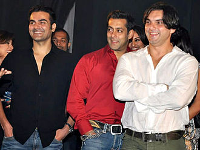
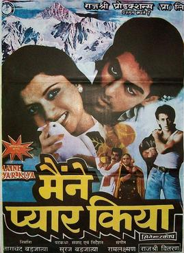
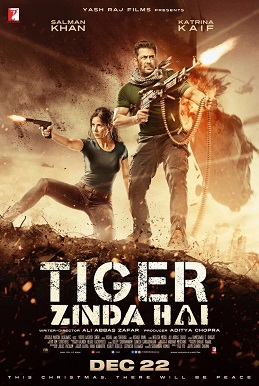

-
Salman Khan
Abdul Rashid Salim Salman Khan is an Indian actor, film producer, singer, painter and television personality who works in Hindi films. In a film career spanning over thirty years, Khan has received numerous awards, including two National Film Awards as a film producer, and two Filmfare Awards for acting.
-
Career
He is cited in the media as one of the most commercially successful actors of Indian cinema. Forbes included him in their 2015 list of Top-Paid 100 Celebrity Entertainers in the world; Khan tied with Amitabh Bachchan for No. 71 on the list, both with earnings of $33.5 million. According to the Forbes 2018 list of Top-Paid 100 Celebrity Entertainers in world, Khan was the highest-ranked Indian with 82nd rank with earnings of $37.7 million. He is also known as the host of the reality show, Bigg Boss since 2010.

-
Early life
Salman is the eldest son of screenwriter Salim Khan and his first wife Sushila Charak, who adopted the name Salma. Born to a Hindu mother and a Muslim father on 27 December 1965, Khan was brought up in both faiths. In 1980, when Salma and Salim got divorced and his father married the actress Helen, the children's relationship with their father grew hostile and only recovered years later.

-
Ancestory
Salman Khan's paternal great-grandparents were Alakozai Pashtuns from Afghanistan who immigrated to Indore State, Indore Residency (now in Madhya Pradesh), British India in the mid-1800s; however, Jasim Khan in his biography of the actor states that his ancestors belonged to the Akuzai sub-tribe of the Yusufzai Pashtuns from Malakand in the Swat valley of North-West Frontier Province, British India (present-day Khyber Pakhtunkhwa, Pakistan). His grandfather Abdul Rashid Khan was a Deputy Inspector General of the Indore state who was awarded Diler Jung award of the Holkar times. Khan's mother is a homemaker, whose father Baldev Singh Charak, a Dogra Rajput, comes from Jammu in Jammu and Kashmir and whose Marathi mother comes from Maharashtra.
 -
Filmography
Biwi Ho To Aisi (transl. A wife should be like this) is a 1988 Bollywood film, directed and written by J.K. Bihari and starring Rekha, Farooq Sheikh and Bindu . The music was scored by the duo of Laxmikant–Pyarelal. The film marked the on-screen debut of Salman Khan and Renu Arya. The story is a family drama that revolves around the lead pair, played by Rekha and Farooq Shaikh, who play a married couple. It's about how the character Shalu overcomes all obstacles in her married life to win over the acceptance of her domineering mother-in-law Kamla

-
Movie 1: Biwi Ho To Aisi
Biwi Ho To Aisi (transl. A wife should be like this) is a 1988 Bollywood film, directed and written by J.K. Bihari and starring Rekha, Farooq Sheikh and Bindu . The music was scored by the duo of Laxmikant–Pyarelal. The film marked the on-screen debut of Salman Khan and Renu Arya. The story is a family drama that revolves around the lead pair, played by Rekha and Farooq Shaikh, who play a married couple. It's about how the character Shalu overcomes all obstacles in her married life to win over the acceptance of her domineering mother-in-law Kamla
-
Movie 2: Maine Pyar Kiya
Maine Pyar Kiya (transl. I've Loved), also known by the initialism MPK, is a 1989 Indian Hindi-language romantic musical film directed by Sooraj Barjatya in his directorial debut, produced by Tarachand Barjatya, co-written by S. M. Ahale with Sooraj Barjatya and distributed by Rajshri Productions. The film had Salman Khan in the lead role with Bhagyashree making her acting debut, with Alok Nath, Mohnish Bahl, Reema Lagoo, Rajeev Verma, Ajit Vachani, and Laxmikant Berde in supporting roles. Maine Pyar Kiya tells the story of two individuals and relates their journey from friendship to how they fall in love but later have to fight family differences to be together.
 -
Movie 3: Ek Tha Tiger
Ek Tha Tiger (transl. Once there was a tiger) is a 2012 Indian Hindi-language action thriller film directed and co-written by Kabir Khan, and produced by Aditya Chopra. It is the first installment in the Tiger franchise. The film contains an ensemble cast, which stars Salman Khan, Katrina Kaif & Ranvir Shorey. It also features Girish Karnad, Roshan Seth, and Gavie Chahal. The film follows Tiger (Salman Khan), an Indian spy tasked with recovering information before it is gained by Pakistan, but is sidetracked after falling in love with Zoya (Kaif), a girl with a dark secret.

-
Movie 4: Sultan
Sultan (transl. King) is a 2016 Indian Hindi-language sports drama film directed by Ali Abbas Zafar. Produced by Aditya Chopra under the Yash Raj Films banner, the film stars Salman Khan as the title character opposite Anushka Sharma. The film focuses on Sultan Ali Khan, a fictional pehlwani wrestler and former world wrestling champion from Haryana whose successful career has created a rift in his personal life. The film was released worldwide on 6 July 2016 to generally positive reviews from the critics and audience who praised the storyline, music, characterisations, wrestling sequences, performances (particularly those of Khan, Sharma, Hooda and Sadh) though received some criticism for its length and screenplay. It has grossed ₹623.33 crore ($89 million) worldwide

Movie 5: Tiger Zinda Hai
Tiger Zinda Hai (transl. 'Tiger is alive') is a 2017 Indian action thriller espionage film directed by Ali Abbas Zafar and co-written with Neelesh Misra. A sequel to the 2012 film Ek Tha Tiger, it is the second installment in the Tiger franchise and also the second installment in the YRF Spy Universe. The film stars Salman Khan and Katrina Kaif. In Tiger Zinda Hai, Tiger (Khan) and Zoya (Kaif) are forced to come out of hiding to save a group of hostages held by a militant terrorist organization in Iraq.
-
Television
In 2008 Khan hosted 10 Ka Dum. The show was extremely popular and was at the number one spot in ratings in India. It garnered an average TVR of 2.81 and a peak rating of 4.5, leaving behind Shahrukh Khan's Kya Aap Paanchvi Paas Se Tej hai? with an average rating of 1.37 TVR and a peak rating of 2.3 and Hrithik Roshan's Junoon – Kuch Kar Dikhane Ka on NDTV Imagine with an average TVR of 0.76 and a peak rating of 1.1. According to reports, the show helped Sony TV regain its third position in the Indian television ratings. He again hosted the show in 2009 and thus won the Best Anchor Award for 10 Ka Dum in 2008 and 2009. In 2010 Khan hosted Bigg Boss 4. The show was widely accepted and appreciated due to Khan's hosting and surpassed the famous hosting of Amitabh Bachchan.

-
Brand endorsements
He is cited in the media as one of the most commercially successful actors of Indian cinema. Forbes included him in their 2015 list of Top-Paid 100 Celebrity Entertainers in the world; Khan tied with Amitabh Bachchan for No. 71 on the list, both with earnings of $33.5 million. According to the Forbes 2018 list of Top-Paid 100 Celebrity Entertainers in world, Khan was the highest-ranked Indian with 82nd rank with earnings of $37.7 million. He is also known as the host of the reality show, Bigg Boss since 2010.
-
Philanthropy
Khan has been involved in several charities during his career. He has started an NGO called Being Human which sells T-shirts and other products online and in stores. A portion of the revenues go to a worthy cause supporting the underprivileged. Being Human Foundation is a registered charitable trust set up by Khan to help the underprivileged. In its early days, Khan set up and funded the Foundation using his own money. The Foundation has two focus areas: education and healthcare. To increase the reach and corpus of the Foundation, Salman Khan has undertaken initiatives such as Being Human Art, Being Human merchandise and Being Human Gitanjali Gold Coins.

-
Media
In 2004 Khan was ranked as the 7th Best looking man in the world by People Magazine of the USA. In 2008 his lifelike wax statue was installed in London's Madame Tussauds Museum; likewise, in 2012 another wax statue of him was installed in New York's Madame Tussauds Museum. In 2010 People Magazine, India declared him the Sexiest Man Alive. In 2011, 2012 and 2013 he was declared the Times of India's Most Desirable Man in 2nd, 1st and 3rd place respectively. In August 2013 he was declared India's Most Searched Celebrity Online. Khan topped the Forbes India charts for 2014, in terms of both fame and revenues.
-
Controvesy
His relationship with actress Aishwarya Rai was a well publicised topic in the Indian media. After their break-up in March 2002, Rai accused him of harassing her. She claimed that Khan had not been able to come to terms with their break-up and was hounding her; her parents lodged a complaint against him. In 2005, news outlets released what was said to be an illicit copy of a mobile phone call recorded in 2001 by the Mumbai police. It appeared to be a call in which he threatened Rai, in an effort to force her to appear at social events held by Mumbai crime figures. The call featured boasts of connections to organised crime and derogatory comments about other actors. However, the alleged tape was tested in the government's Forensic lab in Chandigarh, which concluded that it was fake.
Khan has mentored a number of aspiring Bollywood actors. He has also been an inspiration for some Bollywood actors like Hrithik Roshan and Arjun Kapoor to get into perfect shape. Saawan Kumar Tak, the director of Sanam Bewafa, was helped by Khan as he worked Saawan... The Love Season for free. Khan has recommended composers like Himesh Reshammiya and Sajid–Wajid. He supported Sanjay Leela Bhansali to make Khamoshi: The Musical and then Hum Dil De Chuke Sanam. Actor Govinda' s career was rescued by Khan as he was offered a parallel role in Partner. Similarly it was Khan who suggested Mohnish Bahl to Sooraj Barjatya for Maine Pyar Kiya and later in Baaghi: A Rebel for Love after his stint as hero failed. Bahl has also done important roles in Salman's Hum Aapke Hain Koun..!, Hum Saath-Saath Hain and recently Jai Ho. Similarly he was instrumental in getting Ravi Kishan the role in Tere Naam.
In July 2015, Khan offered to donate the profits of his most successful film Bajrangi Bhaijaan among the poor farmers all over India. The film's producers Khan and Rockline Venkatesh both have mutually decided to donate the profits of their film to them. The film's director Kabir Khan and Salman's sister Alvira Agnihotri met Maharashtra's Revenue Minister Eknath Khadse to discuss the same. Khan met with his 11-year-old fan from Pakistan, Abdul Basit who had severe jaundice at the time of his birth; he was diagnosed to have Crigler Najjar Syndrome and was admitted to the Apollo Hospital, Delhi. The youngster wished to meet the "Bajrangi Bhaijaan" star Khan. Salman was one of the nine personalities invited by India's Prime Minister Mr Modi to promote the message of cleanliness and Swachh Bharat Abhiyan when it was launched on 2 October 2014. In 2016, he agreed to campaign for cleanliness and eradicating open defecation for the Brihan Mumbai Municipal Corporation. His efforts to clean the streets of Karjat, a small town near Mumbai were appreciated by the Prime Minister in a tweet.
Reference:
Word Content: Wikipeida
Images: Mobile Twitter DNA India Super Star Bio